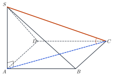
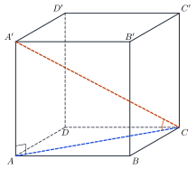

Orthogonal Projection; Angle between a Line and a PlanePhép chiếu vuông góc. Góc giữa đường thẳng và mặt phẳng
Grade 11 · Topic: Perpendicularity in SpaceLớp 11 · Chủ đề: Quan hệ vuông góc trong không gian
1Lesson IntroductionGiới thiệu bài học
Learning goalsMục tiêu bài học
By the end of this lesson you can:
Sau bài học này, em có thể:
find orthogonal projections of points and lines on a plane;
xác định hình chiếu vuông góc của điểm, đường thẳng lên mặt phẳng (phép chiếu vuông góc);
use the three perpendiculars theorem to prove right angles;
vận dụng định lí ba đường vuông góc để chứng minh góc vuông;
find and compute the angle between a line and a plane;
xác định và tính góc giữa đường thẳng và mặt phẳng;
apply slopes of ramps, ladders and roofs.
vận dụng vào độ dốc của đường dốc, thang, mái nhà.
2Mathematical VocabularyTừ vựng Toán học
orthogonal projection – the parallel projection onto a plane in the direction perpendicular to that plane.
phép chiếu vuông góc – phép chiếu song song lên một mặt phẳng theo phương vuông góc với mặt phẳng đó.
three perpendiculars theorem – \(a\subset(P)\), \(b'\) the projection of \(b\) on \((P)\): \(a\perp b\iff a\perp b'\).
định lí ba đường vuông góc – \(a\subset(P)\), \(b'\) là hình chiếu của \(b\) lên \((P)\): \(a\perp b\iff a\perp b'\).
angle between a line and a plane – the angle between the line and its orthogonal projection on the plane (\(90^\circ\) if the line is perpendicular to the plane).
góc giữa đường thẳng và mặt phẳng (hình học) – góc giữa đường thẳng và hình chiếu vuông góc của nó trên mặt phẳng (bằng \(90^\circ\) nếu đường thẳng vuông góc với mặt phẳng).
3Useful English PhrasesCụm từ tiếng Anh thường gặp
The projection of \(S\) on the base is \(A\).
Hình chiếu của \(S\) lên đáy là \(A\).
The projection of \(SC\) is \(AC\).
Hình chiếu của \(SC\) là \(AC\).
The angle between \(SC\) and the base is the angle \(SCA\).
Góc giữa \(SC\) và đáy là góc \(SCA\).
By the three perpendiculars theorem, \(SB\) is perpendicular to \(BC\).
Theo định lí ba đường vuông góc, \(SB\) vuông góc với \(BC\).
The ramp makes an angle of about five degrees with the ground.
Đường dốc tạo với mặt đất góc khoảng 5°.
4Prerequisite ReviewÔn tập kiến thức nền
From Bài 23: \(d\perp(P)\) when \(d\) is perpendicular to two intersecting lines of \((P)\). From Bài 14: parallel projection. Grade 9: \(\tan\alpha=\dfrac{\text{opposite}}{\text{adjacent}}\) in a right triangle.
Từ Bài 23: \(d\perp(P)\) khi \(d\) vuông góc với hai đường thẳng cắt nhau của \((P)\). Từ Bài 14: phép chiếu song song. Lớp 9: trong tam giác vuông \(\tan\alpha=\dfrac{\text{đối}}{\text{kề}}\).
5TheoryLý thuyết
5.1 Orthogonal projectionPhép chiếu vuông góc
DefinitionĐịnh nghĩa
The projection of \(M\) on \((P)\) is the foot \(H\) of the perpendicular from \(M\) to \((P)\). It is the parallel projection along a direction perpendicular to \((P)\).
Hình chiếu của \(M\) lên \((P)\) là chân \(H\) của đường vuông góc kẻ từ \(M\) đến \((P)\). Đó là phép chiếu song song theo phương vuông góc với \((P)\).
The projection of a line not perpendicular to \((P)\) is a line; it is enough to project two of its points. A point of \((P)\) is its own projection.
Hình chiếu của đường thẳng không vuông góc với \((P)\) là một đường thẳng; chỉ cần chiếu hai điểm của nó. Điểm nằm trên \((P)\) có hình chiếu là chính nó.
Three perpendiculars theoremĐịnh lí ba đường vuông góc
Let \(a\subset(P)\) and let \(b\) be a line not perpendicular to \((P)\) with projection \(b'\). Then \(a\perp b\iff a\perp b'\).
Cho \(a\subset(P)\) và đường thẳng \(b\) không vuông góc với \((P)\), có hình chiếu \(b'\) trên \((P)\). Khi đó \(a\perp b\iff a\perp b'\).
5.2 The angle between a line and a planeGóc giữa đường thẳng và mặt phẳng
DefinitionĐịnh nghĩa
If \(d\perp(P)\): \((d,(P))=90^\circ\). Otherwise \((d,(P))\) is the angle between \(d\) and its projection \(d'\) on \((P)\). So \(0^\circ\le(d,(P))\le90^\circ\); it is \(0^\circ\) when \(d\parallel(P)\) or \(d\subset(P)\).
Nếu \(d\perp(P)\): \((d,(P))=90^\circ\). Ngược lại, \((d,(P))\) là góc giữa \(d\) và hình chiếu \(d'\) của nó trên \((P)\). Vậy \(0^\circ\le(d,(P))\le90^\circ\); bằng \(0^\circ\) khi \(d\parallel(P)\) hoặc \(d\subset(P)\).
Method for a slant segment \(SM\) (\(M\in(P)\)): find the projection \(H\) of \(S\); then \((SM,(P))=\widehat{SMH}\) and \(\tan\widehat{SMH}=\dfrac{SH}{HM}\).
Cách làm với đoạn xiên \(SM\) (\(M\in(P)\)): tìm hình chiếu \(H\) của \(S\); khi đó \((SM,(P))=\widehat{SMH}\) và \(\tan\widehat{SMH}=\dfrac{SH}{HM}\).

Watch out!Lưu ý
Do not take the angle with any line of the plane: \((SC,(ABCD))\) is the angle with the projection \(AC\), not with \(BC\) or \(CD\). It is the smallest angle between \(SC\) and the lines of the plane.
Không lấy góc với một đường bất kì của mặt phẳng: \((SC,(ABCD))\) là góc với hình chiếu \(AC\), không phải với \(BC\) hay \(CD\). Đó là góc nhỏ nhất giữa \(SC\) và các đường thẳng của mặt phẳng.
6Worked ExamplesVí dụ có lời giải
ExampleVí dụ 1BasicCơ bản – Projection and angleHình chiếu và góc
\(S.ABCD\): square base of side \(a\), \(SA\perp(ABCD)\), \(SA=a\sqrt3\). Find the angles between \(SB\), \(SD\) and the base.
Hình chóp \(S.ABCD\) có đáy là hình vuông cạnh \(a\), \(SA\perp(ABCD)\), \(SA=a\sqrt3\). Tính góc giữa \(SB\), \(SD\) và mặt đáy.
Analysis: Projections: \(S\to A\), \(B\to B\).
Phân tích: Hình chiếu: \(S\to A\), \(B\to B\).
\((SB,(ABCD))=\widehat{SBA}\), \(\tan\widehat{SBA}=\dfrac{SA}{AB}=\sqrt3\Rightarrow60^\circ\).
\((SB,(ABCD))=\widehat{SBA}\), \(\tan\widehat{SBA}=\dfrac{SA}{AB}=\sqrt3\Rightarrow60^\circ\).
Likewise \((SD,(ABCD))=\widehat{SDA}=60^\circ\) (\(AD=AB\)).
Tương tự \((SD,(ABCD))=\widehat{SDA}=60^\circ\) (vì \(AD=AB\)).
Both angles equal \(60^\circ\).
Cả hai góc bằng \(60^\circ\).
ExampleVí dụ 2BasicCơ bản – Three perpendicularsBa đường vuông góc
\(S.ABCD\): \(ABCD\) is a rectangle and \(SA\perp(ABCD)\). Prove \(SB\perp BC\) and \(SD\perp CD\).
Hình chóp \(S.ABCD\) có \(ABCD\) là hình chữ nhật, \(SA\perp(ABCD)\). Chứng minh \(SB\perp BC\) và \(SD\perp CD\).
Analysis: The projection of \(SB\) on the base is \(AB\).
Phân tích: Hình chiếu của \(SB\) lên đáy là \(AB\).
\(BC\subset(ABCD)\), \(BC\perp AB\) = projection of \(SB\): by the theorem \(BC\perp SB\).
\(BC\subset(ABCD)\), \(BC\perp AB\) là hình chiếu của \(SB\): theo định lí, \(BC\perp SB\).
\(CD\perp AD\) = projection of \(SD\): \(CD\perp SD\).
\(CD\perp AD\) là hình chiếu của \(SD\): \(CD\perp SD\).
Triangles \(SBC\), \(SDC\) are right-angled at \(B\), \(D\).
Tam giác \(SBC\), \(SDC\) vuông tại \(B\), \(D\).
ExampleVí dụ 3IntermediateTrung bình – A diagonal of a cubeĐường chéo hình lập phương
Find the angle between the diagonal \(A'C\) of the cube \(ABCD.A'B'C'D'\) (edge \(a\)) and the base \((ABCD)\).
Tính góc giữa đường chéo \(A'C\) của hình lập phương \(ABCD.A'B'C'D'\) (cạnh \(a\)) và mặt đáy \((ABCD)\).

Analysis: \(AA'\perp(ABCD)\): the projection of \(A'C\) is \(AC\).
Phân tích: \(AA'\perp(ABCD)\): hình chiếu của \(A'C\) là \(AC\).
\(\varphi=\widehat{A'CA}\), \(\tan\varphi=\dfrac{AA'}{AC}=\dfrac{a}{a\sqrt2}=\dfrac{\sqrt2}2\).
\(\varphi=\widehat{A'CA}\), \(\tan\varphi=\dfrac{AA'}{AC}=\dfrac{a}{a\sqrt2}=\dfrac{\sqrt2}2\).
\(\tan\varphi=\dfrac{\sqrt2}2\), \(\varphi\approx35{,}26^\circ\).
\(\tan\varphi=\dfrac{\sqrt2}2\), \(\varphi\approx35{,}26^\circ\).
ExampleVí dụ 4IntermediateTrung bình – A regular pyramidHình chóp đều
Regular pyramid \(S.ABCD\) with base side \(a\) and lateral edge \(a\sqrt2\). Find the angle between \(SA\) and the base, and the height.
Hình chóp tứ giác đều \(S.ABCD\) có cạnh đáy \(a\), cạnh bên \(a\sqrt2\). Tính góc giữa \(SA\) và đáy, và chiều cao của hình chóp.
Analysis: In a regular pyramid the projection of \(S\) is the centre \(O\).
Phân tích: Trong hình chóp đều, hình chiếu của \(S\) là tâm \(O\) của đáy.
\(AO=\dfrac{a\sqrt2}2\); \(\cos\widehat{SAO}=\dfrac{AO}{SA}=\dfrac12\Rightarrow\widehat{SAO}=60^\circ\).
\(AO=\dfrac{a\sqrt2}2\); \(\cos\widehat{SAO}=\dfrac{AO}{SA}=\dfrac12\Rightarrow\widehat{SAO}=60^\circ\).
\(SO=\sqrt{2a^2-\frac{a^2}2}=\dfrac{a\sqrt6}2\).
\(SO=\sqrt{2a^2-\frac{a^2}2}=\dfrac{a\sqrt6}2\).
\(60^\circ\); \(SO=\dfrac{a\sqrt6}2\).
\(60^\circ\); \(SO=\dfrac{a\sqrt6}2\).
ExampleVí dụ 5AdvancedNâng cao – A wheelchair rampĐường dốc cho xe lăn
Building guides require a wheelchair ramp to rise at most 1 m for every 12 m of horizontal length. A ramp rises 0,6 m over a horizontal length of 7,2 m. Find the angle between the ramp and the ground. Does it meet the guide?
Hướng dẫn xây dựng yêu cầu đường dốc cho xe lăn cao không quá 1 m trên mỗi 12 m chiều dài nằm ngang. Một đường dốc cao 0,6 m trên chiều dài nằm ngang 7,2 m. Tính góc giữa mặt dốc và mặt đất. Đường dốc có đạt yêu cầu không?
Analysis: The projection of the ramp line on the ground is its horizontal length.
Phân tích: Hình chiếu của đường dốc lên mặt đất là chiều dài nằm ngang.
\(\tan\varphi=\dfrac{0{,}6}{7{,}2}=\dfrac1{12}\Rightarrow\varphi\approx4{,}76^\circ\).
\(\tan\varphi=\dfrac{0{,}6}{7{,}2}=\dfrac1{12}\Rightarrow\varphi\approx4{,}76^\circ\).
The ratio is exactly \(1:12\): it just meets the guide.
Tỉ số đúng bằng \(1:12\): vừa đạt yêu cầu.
About \(4{,}76^\circ\); acceptable (limit case).
Khoảng \(4{,}76^\circ\); đạt yêu cầu (trường hợp giới hạn).
7PracticeBài tập luyện tập
A. Multiple ChoiceA. Trắc nghiệm nhiều lựa chọn
\(S.ABCD\): square base of side 2, \(SA\perp(ABCD)\), \(SA=2\sqrt3\). The angle between \(SB\) and the base is…
Hình chóp \(S.ABCD\) có đáy là hình vuông cạnh 2, \(SA\perp(ABCD)\), \(SA=2\sqrt3\). Góc giữa \(SB\) và mặt đáy bằng…
Answer: d. \(\tan\widehat{SBA}=\dfrac{SA}{AB}\).
Đáp án d. \(\tan\widehat{SBA}=\dfrac{SA}{AB}\).
\(S.ABCD\): square base of side 3, \(SA\perp(ABCD)\), \(SA=3\sqrt2\). The angle between \(SC\) and the base is…
Hình chóp \(S.ABCD\) có đáy là hình vuông cạnh 3, \(SA\perp(ABCD)\), \(SA=3\sqrt2\). Góc giữa \(SC\) và mặt đáy bằng…
Answer: c. \(\tan\widehat{SCA}=\dfrac{SA}{AC}\), \(AC=3\sqrt2\).
Đáp án c. \(\tan\widehat{SCA}=\dfrac{SA}{AC}\) với \(AC=3\sqrt2\).
\(S.ABCD\) (square base, centre \(O\)), \(SA\perp(ABCD)\). The projection of \(SD\) on \((ABCD)\) is…
Hình chóp \(S.ABCD\) có đáy hình vuông tâm \(O\), \(SA\perp(ABCD)\). Hình chiếu vuông góc của \(SD\) lên \((ABCD)\) là…
Answer: d. The projection of \(S\) is \(A\).
Đáp án d. Hình chiếu của \(S\) là \(A\).
B. True or FalseB. Đúng hoặc sai
The angle between a line and a plane can be obtuse.
Góc giữa đường thẳng và mặt phẳng có thể là góc tù.
Recall the definition.
Nhớ lại định nghĩa góc giữa đường thẳng và mặt phẳng.
\(S.ABCD\): square base, \(SA\perp(ABCD)\). Then \(SC\perp BD\).
Hình chóp \(S.ABCD\) có đáy hình vuông, \(SA\perp(ABCD)\). Khi đó \(SC\perp BD\).
The projection \(AC\perp BD\).
Hình chiếu của \(SC\) là \(AC\perp BD\) nên \(SC\perp BD\).
C. Short AnswerC. Trả lời ngắn
Regular pyramid \(S.ABCD\): base side 4, height \(SO=2\sqrt2\). Find the angle (degrees) between a lateral edge and the base.
Hình chóp tứ giác đều \(S.ABCD\) có cạnh đáy 4, chiều cao \(SO=2\sqrt2\). Tính góc (độ) giữa cạnh bên và mặt đáy.
Enter a number.
Nhập một số.
\(\tan\widehat{SAO}=\dfrac{SO}{AO}\), \(AO=\dfrac{4\sqrt2}2\).
\(\tan\widehat{SAO}=\dfrac{SO}{AO}\) với \(AO=\dfrac{4\sqrt2}2\).
A 10 m ladder leans on a vertical wall with its top 8 m high. Find the length (m) of its orthogonal projection on the flat ground.
Một chiếc thang dài 10 m dựa vào tường thẳng đứng, đỉnh thang cao 8 m. Tính độ dài (m) hình chiếu vuông góc của thang trên mặt đất phẳng.
Enter a number.
Nhập một số.
\(\sqrt{100-64}\).
Hình chiếu là đoạn nối chân thang với chân tường: \(\sqrt{100-64}=6\).
A. Multiple ChoiceA. Trắc nghiệm nhiều lựa chọn
\(S.ABCD\): square base of side 3, \(SA\perp(ABCD)\), \(SA=3\). The angle between \(SB\) and the base is…
Hình chóp \(S.ABCD\) có đáy là hình vuông cạnh 3, \(SA\perp(ABCD)\), \(SA=3\). Góc giữa \(SB\) và mặt đáy bằng…
Answer: d. \(\tan\widehat{SBA}=\dfrac{SA}{AB}\).
Đáp án d. \(\tan\widehat{SBA}=\dfrac{SA}{AB}\).
\(S.ABCD\): square base of side 2, \(SA\perp(ABCD)\), \(SA=2\sqrt6\). The angle between \(SC\) and the base is…
Hình chóp \(S.ABCD\) có đáy là hình vuông cạnh 2, \(SA\perp(ABCD)\), \(SA=2\sqrt6\). Góc giữa \(SC\) và mặt đáy bằng…
Answer: c. \(\tan\widehat{SCA}=\dfrac{SA}{AC}\), \(AC=2\sqrt2\).
Đáp án c. \(\tan\widehat{SCA}=\dfrac{SA}{AC}\) với \(AC=2\sqrt2\).
\(S.ABCD\) (square base, centre \(O\)), \(SA\perp(ABCD)\). The projection of \(SC\) on \((ABCD)\) is…
Hình chóp \(S.ABCD\) có đáy hình vuông tâm \(O\), \(SA\perp(ABCD)\). Hình chiếu vuông góc của \(SC\) lên \((ABCD)\) là…
Answer: d. The projection of \(S\) is \(A\).
Đáp án d. Hình chiếu của \(S\) là \(A\).
B. True or FalseB. Đúng hoặc sai
If \(d\perp(P)\), the angle between \(d\) and \((P)\) is \(90^\circ\).
Nếu \(d\perp(P)\) thì góc giữa \(d\) và \((P)\) bằng \(90^\circ\).
Recall the definition.
Nhớ lại định nghĩa góc giữa đường thẳng và mặt phẳng.
\(S.ABCD\): square base, \(SA\perp(ABCD)\). Then \(SB\perp CD\).
Hình chóp \(S.ABCD\) có đáy hình vuông, \(SA\perp(ABCD)\). Khi đó \(SB\perp CD\).
\(CD\parallel AB\) and \(\widehat{SBA}\ne90^\circ\).
\(CD\parallel AB\) mà \(\widehat{SBA}\ne90^\circ\) nên \(SB\) không vuông góc với \(CD\).
C. Short AnswerC. Trả lời ngắn
Regular pyramid \(S.ABCD\): base side 6, height \(SO=3\sqrt6\). Find the angle (degrees) between a lateral edge and the base.
Hình chóp tứ giác đều \(S.ABCD\) có cạnh đáy 6, chiều cao \(SO=3\sqrt6\). Tính góc (độ) giữa cạnh bên và mặt đáy.
Enter a number.
Nhập một số.
\(\tan\widehat{SAO}=\dfrac{SO}{AO}\), \(AO=\dfrac{6\sqrt2}2\).
\(\tan\widehat{SAO}=\dfrac{SO}{AO}\) với \(AO=\dfrac{6\sqrt2}2\).
A 13 m ladder leans on a vertical wall with its top 12 m high. Find the length (m) of its orthogonal projection on the flat ground.
Một chiếc thang dài 13 m dựa vào tường thẳng đứng, đỉnh thang cao 12 m. Tính độ dài (m) hình chiếu vuông góc của thang trên mặt đất phẳng.
Enter a number.
Nhập một số.
\(\sqrt{169-144}\).
Hình chiếu là đoạn nối chân thang với chân tường: \(\sqrt{169-144}=5\).
A. Multiple ChoiceA. Trắc nghiệm nhiều lựa chọn
\(S.ABCD\): square base of side 3, \(SA\perp(ABCD)\), \(SA=\sqrt3\). The angle between \(SB\) and the base is…
Hình chóp \(S.ABCD\) có đáy là hình vuông cạnh 3, \(SA\perp(ABCD)\), \(SA=\sqrt3\). Góc giữa \(SB\) và mặt đáy bằng…
Answer: d. \(\tan\widehat{SBA}=\dfrac{SA}{AB}\).
Đáp án d. \(\tan\widehat{SBA}=\dfrac{SA}{AB}\).
\(S.ABCD\): square base of side 3, \(SA\perp(ABCD)\), \(SA=\sqrt6\). The angle between \(SC\) and the base is…
Hình chóp \(S.ABCD\) có đáy là hình vuông cạnh 3, \(SA\perp(ABCD)\), \(SA=\sqrt6\). Góc giữa \(SC\) và mặt đáy bằng…
Answer: c. \(\tan\widehat{SCA}=\dfrac{SA}{AC}\), \(AC=3\sqrt2\).
Đáp án c. \(\tan\widehat{SCA}=\dfrac{SA}{AC}\) với \(AC=3\sqrt2\).
\(S.ABCD\) (square base, centre \(O\)), \(SA\perp(ABCD)\). The projection of \(SO\) on \((ABCD)\) is…
Hình chóp \(S.ABCD\) có đáy hình vuông tâm \(O\), \(SA\perp(ABCD)\). Hình chiếu vuông góc của \(SO\) lên \((ABCD)\) là…
Answer: d. The projection of \(S\) is \(A\).
Đáp án d. Hình chiếu của \(S\) là \(A\).
B. True or FalseB. Đúng hoặc sai
If \(d\parallel(P)\), the angle between \(d\) and \((P)\) is \(90^\circ\).
Nếu \(d\parallel(P)\) thì góc giữa \(d\) và \((P)\) bằng \(90^\circ\).
Recall the definition.
Nhớ lại định nghĩa góc giữa đường thẳng và mặt phẳng.
\(S.ABCD\): square base, \(SA\perp(ABCD)\). Then \(SD\perp CD\).
Hình chóp \(S.ABCD\) có đáy hình vuông, \(SA\perp(ABCD)\). Khi đó \(SD\perp CD\).
The projection \(AD\perp CD\).
Hình chiếu của \(SD\) là \(AD\perp CD\) nên \(SD\perp CD\).
C. Short AnswerC. Trả lời ngắn
Regular pyramid \(S.ABCD\): base side 6, height \(SO=\sqrt6\). Find the angle (degrees) between a lateral edge and the base.
Hình chóp tứ giác đều \(S.ABCD\) có cạnh đáy 6, chiều cao \(SO=\sqrt6\). Tính góc (độ) giữa cạnh bên và mặt đáy.
Enter a number.
Nhập một số.
\(\tan\widehat{SAO}=\dfrac{SO}{AO}\), \(AO=\dfrac{6\sqrt2}2\).
\(\tan\widehat{SAO}=\dfrac{SO}{AO}\) với \(AO=\dfrac{6\sqrt2}2\).
A 15 m ladder leans on a vertical wall with its top 12 m high. Find the length (m) of its orthogonal projection on the flat ground.
Một chiếc thang dài 15 m dựa vào tường thẳng đứng, đỉnh thang cao 12 m. Tính độ dài (m) hình chiếu vuông góc của thang trên mặt đất phẳng.
Enter a number.
Nhập một số.
\(\sqrt{225-144}\).
Hình chiếu là đoạn nối chân thang với chân tường: \(\sqrt{225-144}=9\).
D. Self-practice: Multiple ChoiceD. Tự luyện: trắc nghiệm
\(S.ABCD\): square base of side 5, \(SA\perp(ABCD)\), \(SA=\dfrac{5\sqrt3}{3}\). The angle between \(SB\) and \((ABCD)\) is…
Hình chóp \(S.ABCD\) có đáy là hình vuông cạnh 5, \(SA\perp(ABCD)\), \(SA=\dfrac{5\sqrt3}{3}\). Góc giữa \(SB\) và mặt phẳng \((ABCD)\) bằng…
Answer: b. Projection of \(SB\) is \(AB\): \(\tan\widehat{SBA}=\dfrac{SA}{AB}\).
Đáp án b. Hình chiếu của \(SB\) lên đáy là \(AB\): \(\tan\widehat{SBA}=\dfrac{SA}{AB}\).
\(S.ABCD\): square base of side 5, \(SA\perp(ABCD)\), \(SA=\dfrac{5\sqrt6}{3}\). The angle between \(SC\) and \((ABCD)\) is…
Hình chóp \(S.ABCD\) có đáy là hình vuông cạnh 5, \(SA\perp(ABCD)\), \(SA=\dfrac{5\sqrt6}{3}\). Góc giữa \(SC\) và mặt phẳng \((ABCD)\) bằng…
Answer: a. Projection of \(SC\) is \(AC=5\sqrt2\): \(\tan\widehat{SCA}=\dfrac{SA}{AC}\).
Đáp án a. Hình chiếu của \(SC\) lên đáy là \(AC=5\sqrt2\): \(\tan\widehat{SCA}=\dfrac{SA}{AC}\).
\(S.ABC\): \(SA\perp(ABC)\), \(SA=4\), \(AC=7\). If \(\varphi\) is the angle between \(SC\) and \((ABC)\), then \(\tan\varphi=\)…
Hình chóp \(S.ABC\) có \(SA\perp(ABC)\), \(SA=4\), \(AC=7\). Gọi \(\varphi\) là góc giữa \(SC\) và \((ABC)\). Khi đó \(\tan\varphi=\)…
Answer: c. \(\varphi=\widehat{SCA}\), \(\tan\varphi=\dfrac{SA}{AC}\).
Đáp án c. \(\varphi=\widehat{SCA}\), \(\tan\varphi=\dfrac{SA}{AC}=\dfrac{4}{7}\).
\(S.ABCD\) (square base, centre \(O\)) has \(SA\perp(ABCD)\), \(SA=5\). The orthogonal projection of \(SC\) on \((ABCD)\) is…
Hình chóp \(S.ABCD\) có đáy là hình vuông tâm \(O\), \(SA\perp(ABCD)\), \(SA=5\). Hình chiếu vuông góc của \(SC\) lên \((ABCD)\) là…
Answer: d. The projection of \(S\) is \(A\).
Đáp án d. Hình chiếu của \(S\) là \(A\), của điểm thuộc đáy là chính nó.
Cube \(ABCD.A'B'C'D'\) with edge 5. The angle \(\varphi\) between \(BD'\) and \((ABCD)\) satisfies…
Hình lập phương \(ABCD.A'B'C'D'\) cạnh 5. Góc \(\varphi\) giữa \(BD'\) và mặt phẳng \((ABCD)\) là…
Answer: c. Project the upper endpoint vertically onto the base.
Đáp án c. Chiếu vuông góc đầu mút trên xuống đáy; với đường chéo khối: \(\tan\varphi=\dfrac{a}{a\sqrt2}=\dfrac{\sqrt2}2\).
Regular pyramid \(S.ABCD\): base side 8, height \(SO=4\sqrt2\). The angle between a lateral edge and the base is…
Hình chóp tứ giác đều \(S.ABCD\) có cạnh đáy 8, chiều cao \(SO=4\sqrt2\). Góc giữa cạnh bên và mặt đáy bằng…
Answer: d. \(\tan\widehat{SAO}=\dfrac{SO}{AO}\), \(AO=\dfrac{8\sqrt2}2\).
Đáp án d. \(\tan\widehat{SAO}=\dfrac{SO}{AO}\) với \(AO=\dfrac{8\sqrt2}2\).
A 13 m ladder leans on a vertical wall; its top is 12 m above the flat ground. If \(\varphi\) is the angle between the ladder and the ground, then \(\cos\varphi=\)…
Một chiếc thang dài 13 m dựa vào bức tường thẳng đứng, đỉnh thang cao 12 m so với mặt đất phẳng. Gọi \(\varphi\) là góc giữa thang và mặt đất. Khi đó \(\cos\varphi=\)…
Answer: c. The projection of the ladder on the ground has length 5 m.
Đáp án c. Hình chiếu của thang trên mặt đất dài \(\sqrt{169-144}=5\) m nên \(\cos\varphi=\dfrac{5}{13}\).
\(S.ABCD\): ABCD is a rectangle, \(SA\perp(ABCD)\), \(SA=6\). Which angle is a right angle?
Hình chóp \(S.ABCD\) có ABCD là hình chữ nhật, \(SA\perp(ABCD)\), \(SA=6\). Góc nào là góc vuông?
Answer: c. Three perpendiculars theorem: the projection of the slant line is perpendicular to the edge.
Đáp án c. Định lí ba đường vuông góc: hình chiếu của đường xiên vuông góc với cạnh đáy thì đường xiên cũng vuông góc với cạnh đó.
D. Self-practice: Multiple ChoiceD. Tự luyện: trắc nghiệm
\(S.ABCD\): square base of side 8, \(SA\perp(ABCD)\), \(SA=\dfrac{8\sqrt3}{3}\). The angle between \(SB\) and \((ABCD)\) is…
Hình chóp \(S.ABCD\) có đáy là hình vuông cạnh 8, \(SA\perp(ABCD)\), \(SA=\dfrac{8\sqrt3}{3}\). Góc giữa \(SB\) và mặt phẳng \((ABCD)\) bằng…
Answer: b. Projection of \(SB\) is \(AB\): \(\tan\widehat{SBA}=\dfrac{SA}{AB}\).
Đáp án b. Hình chiếu của \(SB\) lên đáy là \(AB\): \(\tan\widehat{SBA}=\dfrac{SA}{AB}\).
\(S.ABCD\): square base of side 8, \(SA\perp(ABCD)\), \(SA=8\sqrt6\). The angle between \(SC\) and \((ABCD)\) is…
Hình chóp \(S.ABCD\) có đáy là hình vuông cạnh 8, \(SA\perp(ABCD)\), \(SA=8\sqrt6\). Góc giữa \(SC\) và mặt phẳng \((ABCD)\) bằng…
Answer: a. Projection of \(SC\) is \(AC=8\sqrt2\): \(\tan\widehat{SCA}=\dfrac{SA}{AC}\).
Đáp án a. Hình chiếu của \(SC\) lên đáy là \(AC=8\sqrt2\): \(\tan\widehat{SCA}=\dfrac{SA}{AC}\).
\(S.ABC\): \(SA\perp(ABC)\), \(SA=1\), \(AC=7\). If \(\varphi\) is the angle between \(SC\) and \((ABC)\), then \(\tan\varphi=\)…
Hình chóp \(S.ABC\) có \(SA\perp(ABC)\), \(SA=1\), \(AC=7\). Gọi \(\varphi\) là góc giữa \(SC\) và \((ABC)\). Khi đó \(\tan\varphi=\)…
Answer: c. \(\varphi=\widehat{SCA}\), \(\tan\varphi=\dfrac{SA}{AC}\).
Đáp án c. \(\varphi=\widehat{SCA}\), \(\tan\varphi=\dfrac{SA}{AC}=\dfrac{1}{7}\).
\(S.ABCD\) (square base, centre \(O\)) has \(SA\perp(ABCD)\), \(SA=5\). The orthogonal projection of \(SO\) on \((ABCD)\) is…
Hình chóp \(S.ABCD\) có đáy là hình vuông tâm \(O\), \(SA\perp(ABCD)\), \(SA=5\). Hình chiếu vuông góc của \(SO\) lên \((ABCD)\) là…
Answer: b. The projection of \(S\) is \(A\).
Đáp án b. Hình chiếu của \(S\) là \(A\), của điểm thuộc đáy là chính nó.
Cube \(ABCD.A'B'C'D'\) with edge 8. The angle \(\varphi\) between \(BD'\) and \((ABCD)\) satisfies…
Hình lập phương \(ABCD.A'B'C'D'\) cạnh 8. Góc \(\varphi\) giữa \(BD'\) và mặt phẳng \((ABCD)\) là…
Answer: d. Project the upper endpoint vertically onto the base.
Đáp án d. Chiếu vuông góc đầu mút trên xuống đáy; với đường chéo khối: \(\tan\varphi=\dfrac{a}{a\sqrt2}=\dfrac{\sqrt2}2\).
Regular pyramid \(S.ABCD\): base side 6, height \(SO=3\sqrt6\). The angle between a lateral edge and the base is…
Hình chóp tứ giác đều \(S.ABCD\) có cạnh đáy 6, chiều cao \(SO=3\sqrt6\). Góc giữa cạnh bên và mặt đáy bằng…
Answer: a. \(\tan\widehat{SAO}=\dfrac{SO}{AO}\), \(AO=\dfrac{6\sqrt2}2\).
Đáp án a. \(\tan\widehat{SAO}=\dfrac{SO}{AO}\) với \(AO=\dfrac{6\sqrt2}2\).
A 5 m ladder leans on a vertical wall; its top is 4 m above the flat ground. If \(\varphi\) is the angle between the ladder and the ground, then \(\cos\varphi=\)…
Một chiếc thang dài 5 m dựa vào bức tường thẳng đứng, đỉnh thang cao 4 m so với mặt đất phẳng. Gọi \(\varphi\) là góc giữa thang và mặt đất. Khi đó \(\cos\varphi=\)…
Answer: b. The projection of the ladder on the ground has length 3 m.
Đáp án b. Hình chiếu của thang trên mặt đất dài \(\sqrt{25-16}=3\) m nên \(\cos\varphi=\dfrac{3}{5}\).
\(S.ABCD\): ABCD is a rectangle, \(SA\perp(ABCD)\), \(SA=2\). Which angle is a right angle?
Hình chóp \(S.ABCD\) có ABCD là hình chữ nhật, \(SA\perp(ABCD)\), \(SA=2\). Góc nào là góc vuông?
Answer: c. Three perpendiculars theorem: the projection of the slant line is perpendicular to the edge.
Đáp án c. Định lí ba đường vuông góc: hình chiếu của đường xiên vuông góc với cạnh đáy thì đường xiên cũng vuông góc với cạnh đó.
D. Self-practice: Multiple ChoiceD. Tự luyện: trắc nghiệm
\(S.ABCD\): square base of side 2, \(SA\perp(ABCD)\), \(SA=2\sqrt3\). The angle between \(SB\) and \((ABCD)\) is…
Hình chóp \(S.ABCD\) có đáy là hình vuông cạnh 2, \(SA\perp(ABCD)\), \(SA=2\sqrt3\). Góc giữa \(SB\) và mặt phẳng \((ABCD)\) bằng…
Answer: c. Projection of \(SB\) is \(AB\): \(\tan\widehat{SBA}=\dfrac{SA}{AB}\).
Đáp án c. Hình chiếu của \(SB\) lên đáy là \(AB\): \(\tan\widehat{SBA}=\dfrac{SA}{AB}\).
\(S.ABCD\): square base of side 8, \(SA\perp(ABCD)\), \(SA=8\sqrt2\). The angle between \(SC\) and \((ABCD)\) is…
Hình chóp \(S.ABCD\) có đáy là hình vuông cạnh 8, \(SA\perp(ABCD)\), \(SA=8\sqrt2\). Góc giữa \(SC\) và mặt phẳng \((ABCD)\) bằng…
Answer: d. Projection of \(SC\) is \(AC=8\sqrt2\): \(\tan\widehat{SCA}=\dfrac{SA}{AC}\).
Đáp án d. Hình chiếu của \(SC\) lên đáy là \(AC=8\sqrt2\): \(\tan\widehat{SCA}=\dfrac{SA}{AC}\).
\(S.ABC\): \(SA\perp(ABC)\), \(SA=5\), \(AC=2\). If \(\varphi\) is the angle between \(SC\) and \((ABC)\), then \(\tan\varphi=\)…
Hình chóp \(S.ABC\) có \(SA\perp(ABC)\), \(SA=5\), \(AC=2\). Gọi \(\varphi\) là góc giữa \(SC\) và \((ABC)\). Khi đó \(\tan\varphi=\)…
Answer: b. \(\varphi=\widehat{SCA}\), \(\tan\varphi=\dfrac{SA}{AC}\).
Đáp án b. \(\varphi=\widehat{SCA}\), \(\tan\varphi=\dfrac{SA}{AC}=\dfrac{5}{2}\).
\(S.ABCD\) (square base, centre \(O\)) has \(SA\perp(ABCD)\), \(SA=7\). The orthogonal projection of \(SC\) on \((ABCD)\) is…
Hình chóp \(S.ABCD\) có đáy là hình vuông tâm \(O\), \(SA\perp(ABCD)\), \(SA=7\). Hình chiếu vuông góc của \(SC\) lên \((ABCD)\) là…
Answer: c. The projection of \(S\) is \(A\).
Đáp án c. Hình chiếu của \(S\) là \(A\), của điểm thuộc đáy là chính nó.
Cube \(ABCD.A'B'C'D'\) with edge 3. The angle \(\varphi\) between \(AC'\) and \((ABCD)\) satisfies…
Hình lập phương \(ABCD.A'B'C'D'\) cạnh 3. Góc \(\varphi\) giữa \(AC'\) và mặt phẳng \((ABCD)\) là…
Answer: a. Project the upper endpoint vertically onto the base.
Đáp án a. Chiếu vuông góc đầu mút trên xuống đáy; với đường chéo khối: \(\tan\varphi=\dfrac{a}{a\sqrt2}=\dfrac{\sqrt2}2\).
Regular pyramid \(S.ABCD\): base side 5, height \(SO=\dfrac{5\sqrt6}{6}\). The angle between a lateral edge and the base is…
Hình chóp tứ giác đều \(S.ABCD\) có cạnh đáy 5, chiều cao \(SO=\dfrac{5\sqrt6}{6}\). Góc giữa cạnh bên và mặt đáy bằng…
Answer: d. \(\tan\widehat{SAO}=\dfrac{SO}{AO}\), \(AO=\dfrac{5\sqrt2}2\).
Đáp án d. \(\tan\widehat{SAO}=\dfrac{SO}{AO}\) với \(AO=\dfrac{5\sqrt2}2\).
A 20 m ladder leans on a vertical wall; its top is 16 m above the flat ground. If \(\varphi\) is the angle between the ladder and the ground, then \(\cos\varphi=\)…
Một chiếc thang dài 20 m dựa vào bức tường thẳng đứng, đỉnh thang cao 16 m so với mặt đất phẳng. Gọi \(\varphi\) là góc giữa thang và mặt đất. Khi đó \(\cos\varphi=\)…
Answer: a. The projection of the ladder on the ground has length 12 m.
Đáp án a. Hình chiếu của thang trên mặt đất dài \(\sqrt{400-256}=12\) m nên \(\cos\varphi=\dfrac{12}{20}\).
\(S.ABCD\): ABCD is a square with centre O, \(SA\perp(ABCD)\), \(SA=3\). Which angle is a right angle?
Hình chóp \(S.ABCD\) có ABCD là hình vuông tâm O, \(SA\perp(ABCD)\), \(SA=3\). Góc nào là góc vuông?
Answer: c. Three perpendiculars theorem: the projection of the slant line is perpendicular to the edge.
Đáp án c. Định lí ba đường vuông góc: hình chiếu của đường xiên vuông góc với cạnh đáy thì đường xiên cũng vuông góc với cạnh đó.
8Common MistakesLỗi thường gặp
Using an edge of the base instead of the projection. \((SC,(ABCD))=\widehat{SCA}\), not \(\widehat{SCB}\).
Lấy cạnh đáy thay cho hình chiếu. \((SC,(ABCD))=\widehat{SCA}\), không phải \(\widehat{SCB}\).
Putting the foot of the height at a vertex of a regular pyramid. The projection of the apex is the centre \(O\).
Đặt chân đường cao của hình chóp đều tại một đỉnh. Hình chiếu của đỉnh là tâm \(O\) của đáy.
Mixing \(\tan\) and \(\sin\). \(\tan=\dfrac{SH}{HM}\) (height over projection); \(\sin=\dfrac{SH}{SM}\).
Nhầm \(\tan\) và \(\sin\). \(\tan=\dfrac{SH}{HM}\) (chiều cao chia hình chiếu); \(\sin=\dfrac{SH}{SM}\).
Applying the three perpendiculars theorem to a line not in the plane. The line \(a\) must lie in \((P)\).
Dùng định lí ba đường vuông góc khi \(a\) không nằm trong mặt phẳng. Đường \(a\) phải nằm trong \((P)\).
9Lesson SummaryTổng kết
Projection of \(M\): foot of the perpendicular; of a line: project two points.
Hình chiếu của \(M\): chân đường vuông góc; của đường thẳng: chiếu hai điểm.
Three perpendiculars: \(a\subset(P)\): \(a\perp b\iff a\perp b'\).
Ba đường vuông góc: \(a\subset(P)\): \(a\perp b\iff a\perp b'\).
\((d,(P))=(d,d')\in[0^\circ;90^\circ]\); for \(SM\): \(\tan\widehat{SMH}=\dfrac{SH}{HM}\).
\((d,(P))=(d,d')\in[0^\circ;90^\circ]\); với \(SM\): \(\tan\widehat{SMH}=\dfrac{SH}{HM}\).
Key words: orthogonal projection, three perpendiculars, angle between a line and a plane.
Từ cần nhớ: orthogonal projection, three perpendiculars, angle between a line and a plane.